AWS có một hệ thống chứng chỉ (AWS Certification) để chứng nhận kiến thức và kỹ năng của người làm Cloud ở nhiều cấp độ và nhiều vai trò khác nhau. Chứng chỉ là cách phổ biến để nhà tuyển dụng và khách hàng đánh giá năng lực AWS của bạn. Với định hướng DevOps, lộ trình thường gặp là Solutions Architect Associate (SAA) → Developer Associate (DVA) → DevOps Engineer Professional (DOP).
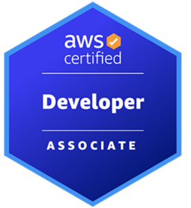
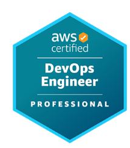
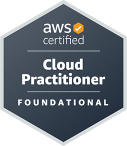
Cloud PractitionerCLF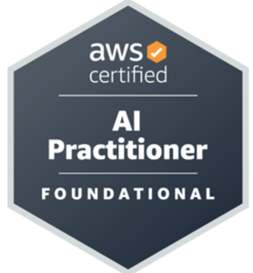
AI PractitionerAIF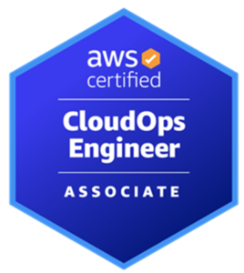
CloudOps EngineerSOA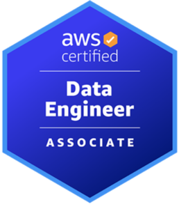
Data EngineerDEA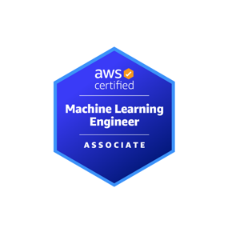
Machine Learning EngineerMLA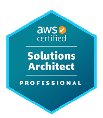
Solutions ArchitectSAP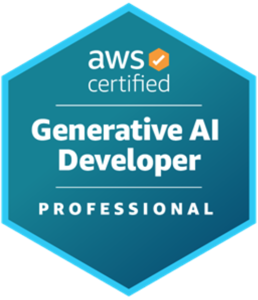
Generative AI DeveloperProfessional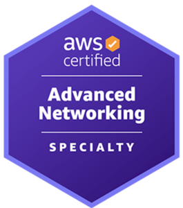
Advanced NetworkingANS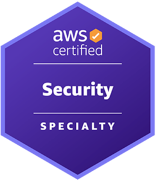
SecuritySCS*Danh sách chứng chỉ thay đổi theo thời gian, xem bản mới nhất tại aws.amazon.com/certification.
Có. Chứng chỉ giúp chứng nhận kiến thức của bản thân, có giá trị khi deal lương, khi apply vào công ty là partner của AWS và khi đàm phán dự án với khách hàng.
Tuyệt đối không nên. Không có kinh nghiệm thực chiến sẽ khiến bạn gặp khó khăn khi vào dự án; ngoài ra vào phỏng vấn cũng sẽ dễ dàng bị phát hiện.
Có thể, nếu bạn đủ tự tin hoặc đã làm việc đủ lâu trong lĩnh vực Cloud. Tuy nhiên với người mới, Associate là bước đệm giúp hệ thống hoá kiến thức tốt hơn.
Bắt đầu với Cloud Practitioner hoặc thi thẳng SAA, kết hợp làm các lab thực tế để có “câu chuyện” khi phỏng vấn.
SAA + DVA để nắm vững kiến trúc và các dịch vụ dành cho developer (Lambda, API Gateway, CodePipeline...), sau đó hướng tới DOP.
Công ty partner cần số lượng chứng chỉ nhất định để duy trì cấp độ partnership — chứng chỉ thường được công ty tài trợ chi phí thi.